limit of chain complexes
1. Proposition
 be a
be a 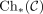
the category of chain complexes. Suppose there exists a diagram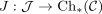
and all limits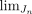
, then a limit of the chain complexes is given by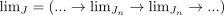
see: lim
2. Proof
2.1. special case
empty diagram, here the zero chain satisfies the requirements todo
2.2. construction
Consider a chain complex as diagram
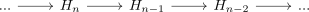
Thus we get
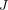
-shaped diagrams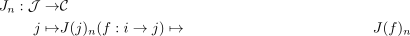
obtained by postcomposition with n-th component functor of chain complexes.
By commutativity of chain maps, we obtain natural transformations from the boundary maps
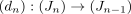
Hence taking the lim functor results in a diagram
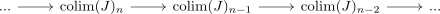
It remains to show, that this is a valid chain complex. Choose an indexed chain complex
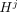
.Then we get a commutative diagram
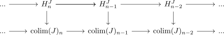
and by boundary condition a zero morphism
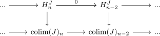
Note that
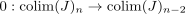
makes the diagram commute, hence, since the morphism is induced by the universal property (cf. limit), we conclude, that is also the morphism in the bottom half
is also the morphism in the bottom half
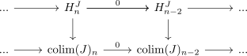